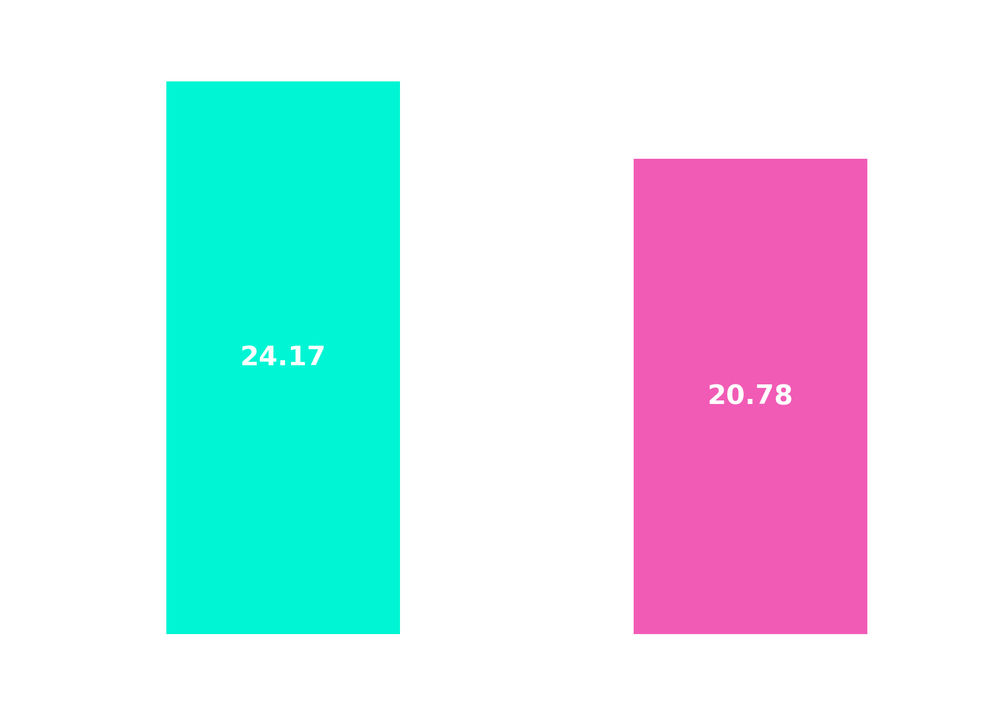
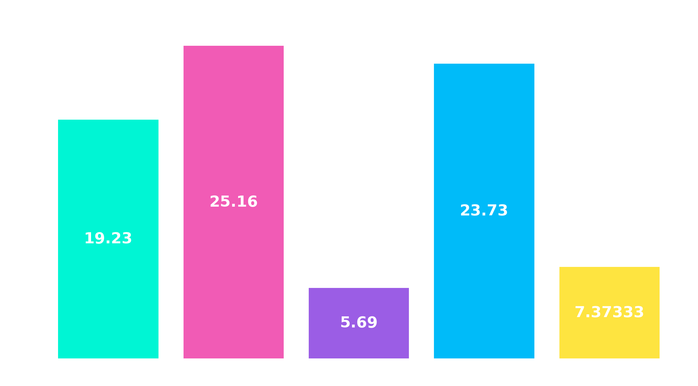

Análise completa do projeto seguindo as etapas do desenvolvimento.
Aqui você descreve o problema que motivou o projeto. Explique o contexto, os dados disponíveis e qual pergunta você queria responder.
Descreva a abordagem utilizada para resolver o problema. Explique os passos da análise e a lógica utilizada.
Aqui você mostra os principais insights e resultados obtidos.

Explique o que o gráfico mostra e quais conclusões podem ser tiradas a partir dele.

Explique o que o gráfico mostra e quais conclusões podem ser tiradas a partir dele.

Explique o que o gráfico mostra e quais conclusões podem ser tiradas a partir dele.